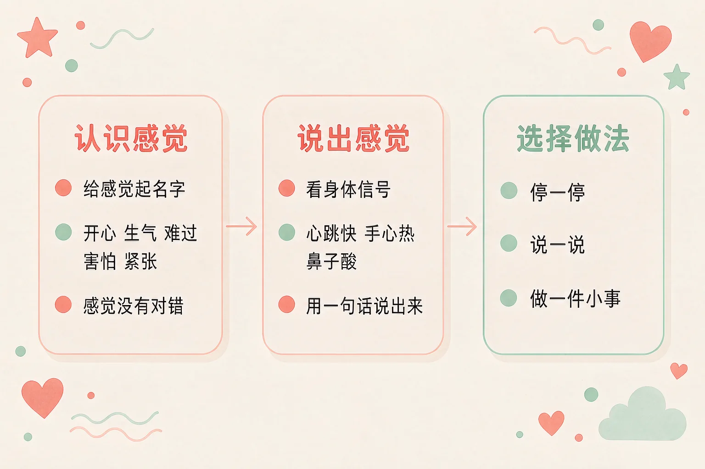
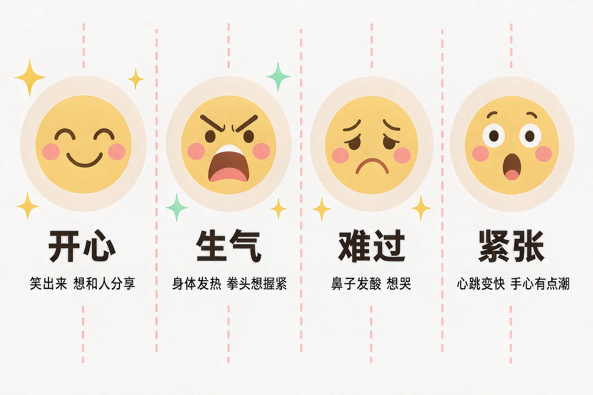
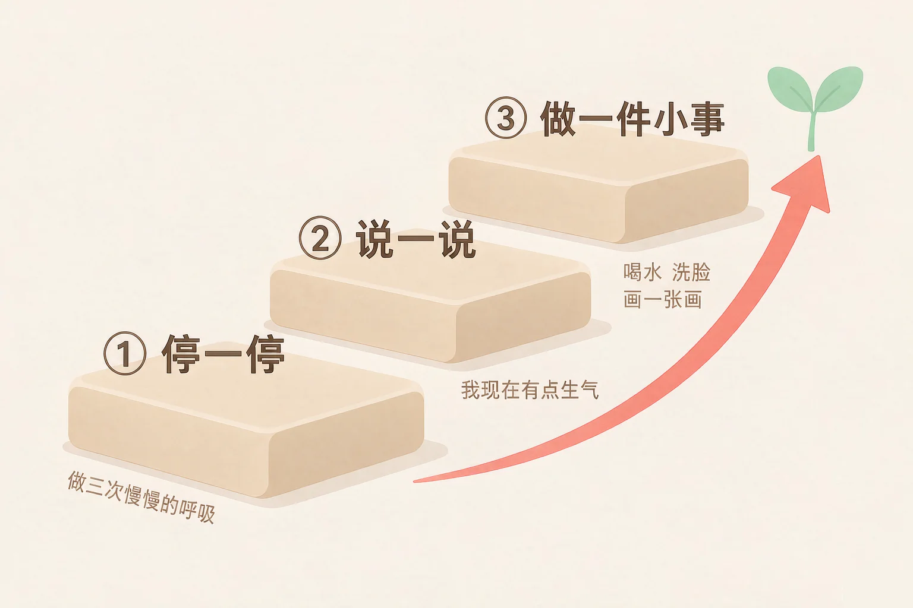

Gallery
v1.0.0 · skill v7.22.0
小学二年级 · 情绪调适
心里忽然冒出一股气，或者鼻子一下子酸酸的，这时候可以怎么办？

选一个你真正想知道的问题，后面的活动都会围着它转。
选择或输入后，这节课会围绕你的问题展开。
先凭直觉选一个，选完立刻看到解释——错了也没关系，正好知道要重点听哪里。
1. 下面哪一句话说得对？
开心、生气、难过、害怕、紧张，都只是感觉的名字，感觉本身没有对错。错因提醒：常见错误是把「感觉」和「做法」搞混了——需要挑一挑的是做法，不是感觉。
2. 小明很生气，下面哪个做法更合适？
停一停让身体慢下来，说一说让别人知道你怎么了。错因提醒：有人误认为动手最快解决问题，其实事情常常会变得更大；也有人误认为憋着就是控制得好，可是憋太久，身体会更难受。
3. 心里的感觉一下子说不出来，可以先做什么？
身体常常比嘴巴先知道：心跳变快、手心发热、鼻子发酸，都是线索。错因提醒：容易误认为「说不出来就是没事」——先看身体，再给感觉起名字，慢慢就说得出来了。
为什么要学这一课？
一年级的时候，我们已经知道心里不舒服可以说给老师听（And）；可是有时候，我们只感觉到「心里乱乱的」，说不清到底是哪一种（But）；所以这节课先学最要紧的一件事——给感觉起名字（Therefore）。
心里的感觉有一个共同的名字，叫情绪。开心、生气、难过、害怕、紧张、委屈、后悔，每一种都有自己的名字。
身体会先告诉你
心跳变快、手心发热、鼻子发酸、肩膀绷紧、喉咙发堵——这些都是感觉的线索。
叫出名字，就轻一点
把感觉叫出名字，心里那团乱乱的东西就小了一点。能说出来，就不用一个人扛着。

🔍 深层理解 换个角度再看一遍这件事，看看能不能说出背后的原理。
看见它：心里的感觉看不见，可身体会替它说话：手心会热、心跳会快、鼻子会酸。先看见身体，就看见了感觉。
解释它：为什么叫出名字就轻松一点？因为说不清的时候最难受，像一团打了结的线；起了名字，就知道自己遇到的是什么了。
迁移它：这个办法到哪里都能用：在家里、在医院、在陌生的地方，先看看身体的感觉，再给感觉起个名字。
先点一件小事，再从三个感觉里选一个。三个都可以选，没有对错；选完会告诉你这种感觉常常带着什么身体信号。
先点一件你今天可能遇到的小事。
生气的时候，心里那团火是真的。可火不一定非要烧到别人身上——感觉要留下，做法可以换。

有的同学误认为「生气的时候动手，最快把事解决掉」。其实手一动，事情常常一下子变大，两个人都会受伤、都会被批评。生气的时候，手可以不动——声音可以说大一点，话可以说清楚，但手放下来。
🔍 深层理解 换个角度再看一遍这件事，看看能不能说出背后的原理。
拆开它：「生气」拆开看是两件事：一件是心里那团火（感觉），一件是接下来要做什么（做法）。火不用道歉，做法可以挑。
比较它：同样很生气，一个同学推了人，一个同学先呼吸再说出来——感觉一样大，结果很不一样。不一样的地方就在做法上。
迁移它：在家里和弟弟妹妹抢玩具、在操场上被人撞到，都能走这三步。三步在哪里都好用。
先点一个情境，再从三个做法里选一个。选得不太合适也不会说你错，只会告诉你：这样做可能会发生什么，还可以试试什么。
先点一个你今天可能遇到的情境。
情境：课间，小满搭了很久的积木被跑过的同学撞倒了。他胸口发烫，很想推那个同学一把。请你陪他走四步。
有的同学误认为「生气就要马上还回去，不然显得好欺负」。小满这四步里，一步也没有忍气吞声——他停下来了，也说清楚了。真正的力量，不在推那一下，而在能把自己的话说出来。
说给同桌听：小满这四步里，哪一步你自己已经做到了？哪一步还想再练一练？
先凭直觉选一个，选完立刻看到解释——错了也没关系，正好知道要重点听哪里。
1. 下面哪句话说得对？
每一种感觉都有自己的名字和用处，感觉不是好坏的分数。错因提醒：常见错误是给感觉贴标签，把「有感觉」当成「做得不好」——要挑一挑的是做法，不是感觉。
2. 很生气的时候，下面哪个做法更合适？
停一停是给身体一点时间，说一说能让别人知道你怎么了；声音可以大，手不动。错因提醒：前一个想法是误认为动手最省事，后一个想法是误认为憋住就是控制得好——憋太久，身体会更难受。
3. 感觉自己慢慢平静下来之后，最好再做一件事，是：
说出来，事情才算真的过去，别人也知道下次该怎么做。错因提醒：不要把「不说了」当成「事情过去了」——闷在心里的事，常常会再冒出来一次。
三栏里各选一条，拼成一句话。这句话就是你的情绪小锦囊，下次感觉来了，照着它走就行。
① 停一停 已选：还没有选
② 说一说 已选：还没有选
③ 做一件小事 已选：还没有选
三栏各选一条，锦囊就拼好了。
把它变成你自己的话：
想一想，你最常遇到的是哪一件事？把上面选好的三条，写成你自己的句子。
先凭直觉选一个，选完立刻看到解释——错了也没关系，正好知道要重点听哪里。
1. 妈妈答应带我去公园，出门前忽然下雨，去不成了，我心里有点难过。下面哪个做法更合适？
把失望说出来，事情还有商量的余地；说清楚之后，心里也会松一点。错因提醒：常见错误是把「心里不舒服」变成「让对方也不舒服」——扔东西和不说话，都只会让两个人都更难受。
2. 妹妹把我的画涂花了，我很想发火。下面哪个做法更合适？
先把身体安顿好，再说清楚自己的不喜欢，妹妹才知道以后不能这样做。错因提醒：有人误认为「她也难受一次才算公平」，可是两个人都不高兴，事情还是没解决。
3. 我最好的朋友今天没来上学，老师说她生病了，我心里有点担心。下面哪个做法更合适？
担心别人的时候，做一件小事，比一直想更有用。错因提醒：不要在别人不说话的时候，就以为是自己哪里做错了——想不通的时候，直接问一问，会更清楚。
还要记牢一件事：有感觉，是一件很自然的事，你一点也不奇怪。心里的事情如果一直很重、一直放不下，说给爸爸妈妈或者老师说一听，是很聪明的做法。
给别人讲一遍：请用「感觉、名字、做法」这三个词，说清楚你上一次生气的经过。
再动一动手：画一画你的三步小台阶，在每一级台阶上写一个你自己做得到的小动作。
三层练习，做完第一、二层就算通关；第三层留给愿意继续探索的同学。
⭐ 基础巩固（必做）
⭐⭐ 能力应用（必做）
⭐⭐⭐ 迁移挑战（选做）
左边是学它之前要先会的，右边是学会之后可以继续探索的，下面是同一领域的伙伴知识。
图谱正在加载：首次进入需下载知识索引（约 1–3 秒），加载完成后本行会自动消失。